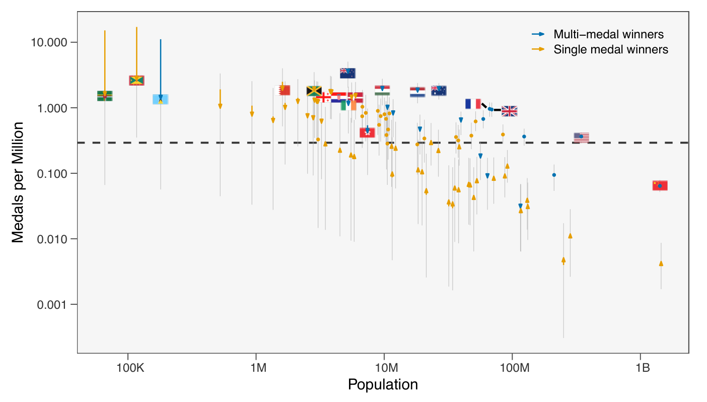
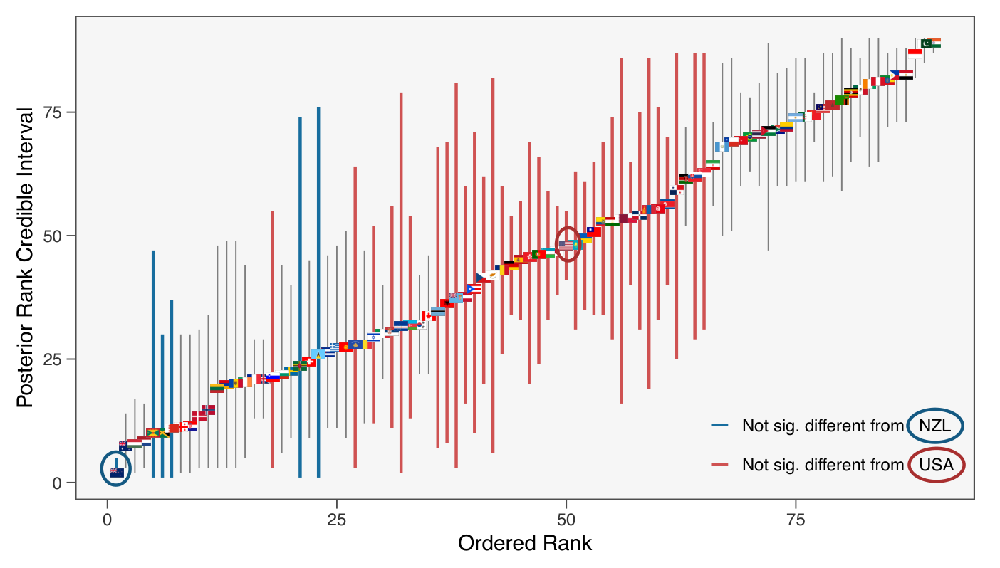

Bayesian Ranking of
Olympic Medal Performance
Evaluating a country’s sporting success can provide insight into its decision making and the infrastructure used to develop athletic talent. The Olympic Games serve as a global benchmark, yet conventional medal tables can be overly influenced by population size and can be highly variable, particularly for smaller nations where outcomes are more affected by stochastic fluctuations. We propose a Bayesian ranking scheme to rank the performance of National Olympic Committees by inferring an underlying ‘long-run’ medals-to-population ratio from the results of a single Olympic Games. The approach applies shrinkage to stabilise estimates for small-population countries (which are most susceptible to random variation) while leaving large-population countries comparatively unchanged. The Bayesian framework yields posterior distributions over both the inferred medals per-capita performance and the induced ranks, providing a principled measure of uncertainty in each country’s ranking position and highlighting cases where apparent differences between neighbouring countries are not credibly distinguishable. These posterior rank summaries give a more stable and interpretable ordering of national sporting performance than point-estimate medal tables, while making uncertainty in comparative performance explicit.
Methodology
Likelihood
Let Mi,c be the number of athletes from country c who won exactly i medals. Multi-medalists are modelled separately as independent Poisson random variables to preserve event independence with rates determined by population size nc and the individual probability pi,c of winning i medals. This Poisson model is justifiedThis Poisson model is justified by a small p, large n approximation to a Binomial process..
Since multiple-medal athletes are rare, the probabilities pi,c are defined through conditional probabilities qi = P(Xc ≥ i | Xc ≥ i-1) and the probability that a randomly selected individual from that nation winning at least one medal denoted by pc = P(Xc ≥ 1). This structure allows information to be sharedThis structure allows information to be shared across medal tiers helping MCMC convergence. across medal tiers.
Priors & hyperpriors
Few nations have multi-medallistsFew nations have multi-medallists, leaving αq and βq poorly identified leading to MCMC non-convergence under uninformative priors.. We reparameterise via the beta mean θq = αq/(αq+βq) which implicitly induces a prior on αq.
As only 11 athletes in Paris 2024 won 3 or more medals, q3 and q4 are set as global constants across all countries, with uninformative priors, pooled across all nations. Posterior inference is performed via Gibbs sampling using the rJAGS package with the expected per-capita number of medals for a country in each posterior sample computed directly from the sampled parameters.
Shrinkage of medal rates
Posterior estimates apply stronger shrinkage to countries with smaller populations or medal counts driven by a few multi-medalists. Countries with large populations and medal countsThese show narrow credible intervals, reflecting minimal shrinkage and high credibility in their estimates. show narrow credible intervals, reflecting minimal shrinkage and high credibility in their estimates. Small nations with few medalsThese have their observed rates shrunk considerably and exhibit wide credible intervals. have their observed rates shrunk considerably and exhibit wide credible intervals.

Credibly different ranks
An advantage of obtaining a posterior distribution of ranks is ranking uncertainty can be assessed by a 95% credible interval for the true rank of a country. We take the difference in the two countries' ranked medal rates at each of the posterior draws. We define the rank difference to be statistically significantStatistically significant when the credible interval computed via the middle 95% of these rank differences excludes zero. when the credible interval computed via the middle 95% of these rank differences excludes zero.
The red interval lines indicate countries that are not credibly different to the United States, and likewise the blue lines for the top ranked country, New Zealand.

Explore the results yourself
Interactive dashboard for full exploration of the Bayesian ranking results for all NOCs, including all the other ranking methods considered. It also contains the complete set of such results from all the Olympic Games since Athens 2004. Key demographics are also included to allow for user specific comparison.
Launch the dashboardReferences
- Laird, N. M. & Louis T. A. (1989). Empirical Bayes ranking methods. Journal of Eduactional Statistics, 14(1), 29-46
- Duncan, R. C. & Parece, A. (2024). Population-adjusted national rankings in the Olympics. Journal of Sports Analystics, 10(1), 87 -104.
- United Nations (2025). UN Department of Economics, Population Division Data Downloads.
- Wasserstain, R. L. & Lazar, N. A. (2016). The ASA statement on p-values: Context, process, and purpose. The American Statistician, 70(2), 129-133
- .... Rest of references from paper, maybe possible to make clickable to teh actual papers/ have this as a spearte page
Contact
Get in touch
Happy to discuss the methodology and results.
Also happy to discuss…
- Research on sports analytics
- Feedback on my work